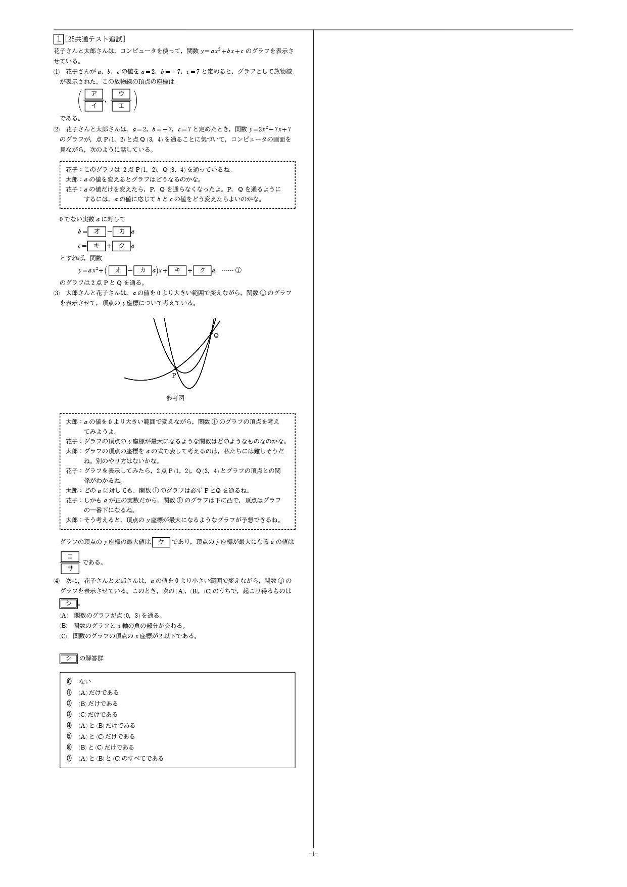

生成AI利用の基本ルールと環境確認
さまざまな実践内容を知識としてお伝えします。30分という限られた時間の中ですべてをお伝えしたり演習したりすることはできないため、このポータルサイトを見返してみてください！このポータルサイトはGeminiが数分で作りました。
Google Gemini
Geminiを開く- 各学校のGoogleアカウントでGeminiを開くと、画面下に「兵庫県教育委員会事務局教育企画課 のチャットはモデルのトレーニングには使用されません。」と表示されます。外部へのデータ漏洩の心配はありません。
- 注意：モデルのトレーニングに使用されない設定であっても、個人情報（生徒の氏名等）の入力は禁止されています。
- 誤った情報を出力すること（ハルシネーション）があるため、最終確認は必ずご自身で行ってください。
Microsoft Copilot
Copilotを開く- 学校や教育機関のMicrosoftアカウントでログインすると、商用データ保護（Enterprise Protection）が適用されます。
- 入力データがモデルのトレーニングに使用されるのを防止した状態で安全に利用できます。
プレチェック（認識確認）
〈今回の肝！〉どんな場面（教育利用・校務利用）でも活用できる必須プロセス
画像ファイルやPDFファイルを読み込ませるとき、いきなり指示するとAIがファイルを誤認識して指示通り回答しないことがあります。 最初に指示を送信したら、生成AIに「いま、どのような認識をしていますか？」「不十分なことがあれば、出力の前に私に質問をしてください」と伝え、 文字起こしと図の確認だけを行わせる「プレチェック」を行います。
令和７年度大学入学共通テスト追試験「数学Ⅰ・数学Ａ」第１問〔１〕２次関数


※画像上で「右クリック ➔ 画像をコピー」を行うと、Geminiに直接貼り付け（Ctrl + V）できます。
プレチェック（認識確認）プロンプト
添付した画像（数学の問題）を読み取り、以下の3点を出力してください。 - 問題文および数式の正確なテキスト化（文字起こし） - 参考図（グラフや図形）に何が描かれているかの簡潔な説明 - 画像内で読み取りにくかった箇所や、認識が不確実な点（あれば） ※この段階では、まだ解説や類題の作成は行わず、認識の確認のみを行ってください。
学年別問題・授業アレンジ
認識が揃ったら目的の指示を出します。担当されている学年や学校の状況に合わせて、最適なプロンプトを選択して実行してください。 いずれのプロンプトも**「画面確認用」「模範解答・基準」「Studyaid/Wordコピペ用」**の3段階で出力されます。
この問題の意図（定点を通る放物線の動き）を活かし、高校1年生の定期考査用（記述式・大問1問）として思考力問題を作成してください。 〈制約・調整条件〉 - 高校1年生が計算でつまずかないよう、aの値に応じて決まる頂点の座標が「整数値」になるような具体的な点や係数の設定に数値を調整してください。 - 以下の誘導（小問）を含む記述式問題にしてください。 (1) 与えられた2点を通る条件から、b, c を a で表す。 (2) 与えられた式を a を用いて平方完成し、頂点の座標を求める。 (3) a の値の範囲における頂点のy座標の動き（最大値など）を考察する。 - 採点しやすいよう「解答・模範答案」と「部分点・採点基準」を合わせて作成してください。 - Studyaidに入力しやすいシンプルなテキスト形式で出力してください。 〈出力形式〉以下の3つのステップ順で出力してください。 - ［画面確認用：問題プレビュー］見出しや太字、改行を活用し、問題文・(1)(2)(3)の誘導の繋がりが画面上で一目でわかるよう美しく整形して表示してください。 - ［模範解答・採点基準 / 誤答解説］解答のプロセスと、生徒のつまずきに応じた部分点・誤答理由の解説を出力してください。 - ［Studyaid/Word コピペ用プレーンテキスト］マークダウン記号（#や**など）を使わず、StudyaidやWordにそのまま貼り付けできるプレーンテキスト形式で問題文と解答を出力してください。
この問題の構造・難易度をベースに、大学入学共通テスト本番と同等レベルの「選択式・空欄補充問題（類題）」を作成してください。 〈制約・調整条件〉 - 太郎さんと花子さんの対話文を含め、共通テスト特有の思考・探究プロセスを再現してください。 - 選択肢を作成する際は、正解だけでなく、生徒が陥りやすい以下のミスに基づいた「誤答選択肢（ダミー）」を作成してください。 ・符号のプラスマイナスを逆にするミス ・a の条件（a > 0 など）の見落としによるミス ・頂点の x 座標と y 座標の勘違いによるミス - 問題文（マーク枠つき）、正解、および「なぜその誤答選択肢が存在するのか（生徒のつまずき解説）」を出力してください。 〈出力形式〉以下の3つのステップ順で出力してください。 - ［画面確認用：問題プレビュー］見出しや太字、改行を活用し、問題文・(1)(2)(3)の誘導の繋がりが画面上で一目でわかるよう美しく整形して表示してください。 - ［模範解答・採点基準 / 誤答解説］解答のプロセスと、生徒のつまずきに応じた部分点・誤答理由の解説を出力してください。 - ［Studyaid/Word コピペ用プレーンテキスト］マークダウン記号（#や**など）を使わず、StudyaidやWordにそのまま貼り付けできるプレーンテキスト形式で問題文と解答を出力してください。
この問題をもとに、高校1年生の授業（50分コマ）で生徒の思考力を引き出すための「授業展開案」と「学習支援資料」を作成してください。 〈制約・調整条件〉 - 授業冒頭で生徒に投げかける「導入の発問」と、問題の渡し方（どこまで提示するか）の工夫 - 机行指導（個別フォロー）でそのまま使える「3段階のヒント（着眼点・立式・思考の補助）」 - 最後に生徒に気づかせたい数学的なポイントのまとめ
Gemini Notebook（NotebookLM）× Google Classroom
教員は教材PDFを置くだけ。生徒自身が「動画・音声・クイズ」を自動生成して自学自習するため、教員の準備負担を最小化しながら個別最適な学びを最大化します。
アップロードした一次資料（教材PDF）のみに基づいて回答する制限がかかるため、AIの嘘（ハルシネーション）を防ぎ安全な自学自習環境を作れます。
自分の弱点に合わせて「クイズを作らせる」などのAI活用自体がメタ認知（学びの客観視）を促し、主体的・探究的な学習活動へつながります。
[Gemini Notebook] 実践サンプル・ノートブック
問題画像を1枚アップロードするだけで、以下の多面的な教材コンテンツを一元生成できます：
Gemini in Google Classroom
Gemini in Google Classroom
通常のGeminiを使うよりも、複雑な指示文（プロンプト）を入力することなく、簡潔な操作で分かりやすい回答を得ることができます。
Geminiでコンテンツや教材を作成する具体例
- ・対象学年： 11（高校2年生）
- ・指導内容： 仮説検定（数学があまり得意ではない生徒対象）
- ・生徒の参加形式： 好奇心への訴えかけ
- ・対象学年： 10（高校1年生）
- ・パフォーマンスレベル： 4
- ・課題の手順： ジグソー法でのプレゼンテーション
- ・目指すスキル： 思考・判断・表現
- ・対象学年： 10（高校1年生）
- ・指導内容： 三角比
これからの学びと資産化へのヒント
AIを知っているか・知っていないか、使えるか・使えないかで、これからの教員生活における**「ゆとり」**と**「生徒と向き合う時間」**は大きく変化します。 AIという頼れる相棒を味方につけて、生まれたゆとりを丁寧な生徒サポートと、ご自身の専門性を高める学びの時間へと還元していってください！
作られたGemやプロンプトをテキストファイル（`.md` や `.txt`）で手元に保存しておくと、将来AIの仕様が変わっても言葉（プロンプト）を残しておくだけで**一生使える先生方の教育資産**になります。